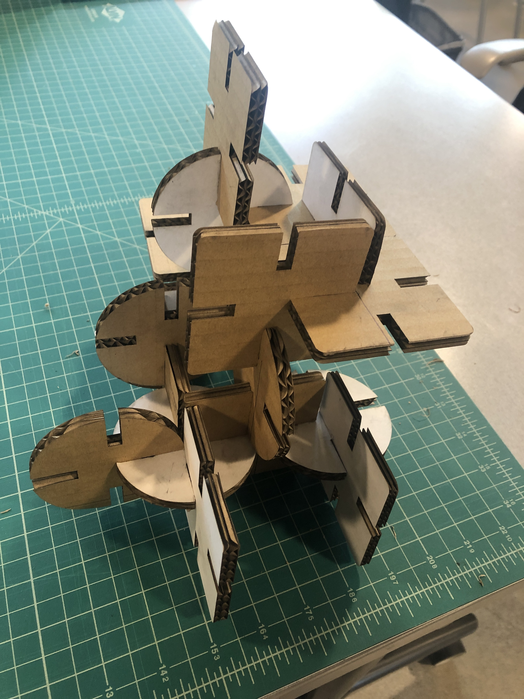

Process:
This assignment was very difficult for me because it took me a while to understand how Rhino
and Grasshopper worked. I knew I wanted to keep my shapes simple until I got the hang of Rhino
and Grasshopper.
I used Grasshopper to make circles and sqaures with slits to put the pieces together.
Square
I used the Construct Domain Function with number sliders to build the square from the center point
and to be able to manipulate each side of the square individually. Each domain function was added
as an X and Y input.
Once the main square was built using the Construct Domain Function, I used number sliders in the
X and Y inputs of the rectangle and connected the sliders to Multiplication function, Vector XYZ, Move
and Polar Array to make rectangles that would serve as slits. I'm able to move the number sliders on the
X value to adjust the width of the slits. Finally, I used Region Difference to trim the shape.